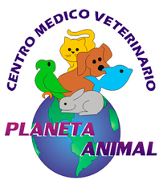

Pedir horaConsultas, cirugías, análisis clínico y peluquería en Antofagasta. Para ellos, que son parte de la familia.
Llama al (055) 284 4561Atención veterinaria para el bienestar de tu mascota.
Procedimientos quirúrgicos para tu mascota.
Exámenes para un diagnóstico claro.
Higiene y cuidado de piel y pelaje.
Corte y arreglo para perros.
Vamos a tu casa cuando lo necesitas.
Medicamentos y artículos de aseo para tu mascota.
Mejorar constantemente la calidad de vida de las mascotas y de sus dueños, cuidando el equilibrio sanitario y emocional de ambos.